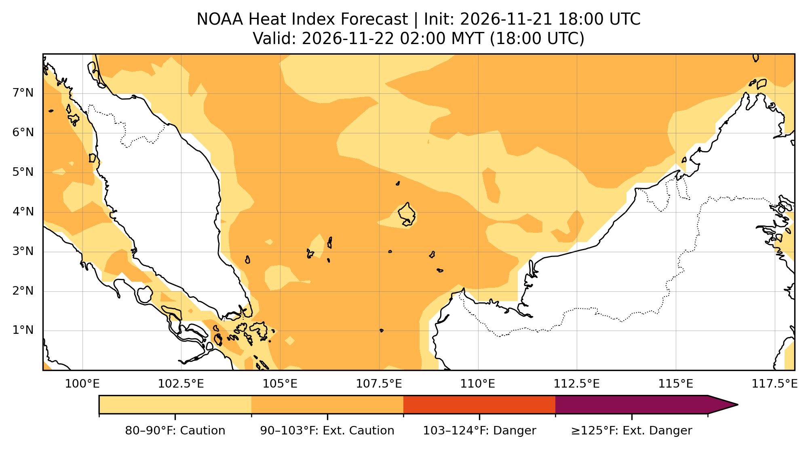
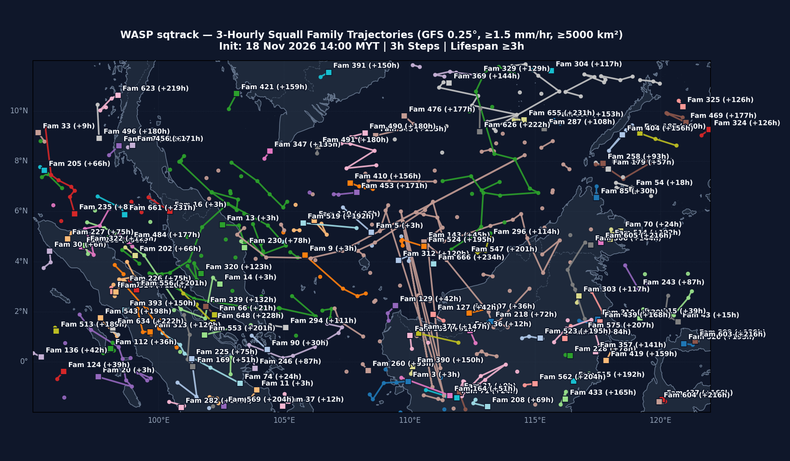

NOAA GFS 0.25°

Heat Index & Thermal Stress
Daily heat index guidance across Southeast Asia to gauge outdoor thermal comfort and heat risk.
Explore Heat Index Maps →
NOAA GFS 0.25°

Accumulated Rainfall
Deterministic precipitation forecasts.
Explore Rainfall Maps →
31-Member GEFS Ensemble

Cold Surge & Rain Probability
10-day ensemble exceedance probabilities (≥20, ≥59, ≥80 mm/day) paired with 925 hPa wind vectors and cold surge index.
Explore 10-Day Ensemble →
sqtrack • 3-Hourly GFS

Tag & Track
Automated object tagging and trajectory tracking of convective rain cells and squalls across Malaysia.
Explore Storm Tracks →